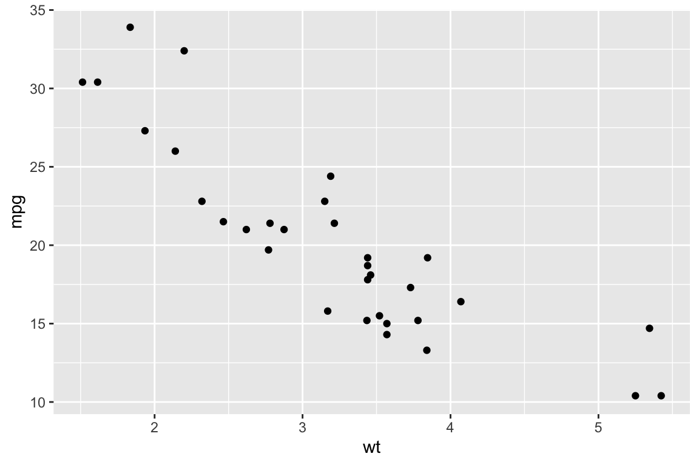

Day 1: Introduction to RStudio & the Tidyverse
Kathleen Hablutzel
6/11/2020
Welcome!!!
Getting Started
If you haven’t already, start downloading R and R Studio. See the instructions here under “Getting Started.”
Here is the recording of today’s lesson. (This is only accessible within the NCSSM organization.) You can also follow along with the code below.
Creating an RMarkdown Document
- Write text and embed code chunks
- R is the language (in the console and in code chunks)
- RStudio is the programming environment
- RMarkdown is a markup language for combining text with code
- Produce reproducible reports where the code is right there
- Export to HTML, PDF, MS Word (how I created website)
summary(cars)## speed dist
## Min. : 4.0 Min. : 2.00
## 1st Qu.:12.0 1st Qu.: 26.00
## Median :15.0 Median : 36.00
## Mean :15.4 Mean : 42.98
## 3rd Qu.:19.0 3rd Qu.: 56.00
## Max. :25.0 Max. :120.00See the RMarkdown reference guide.
Data Visualizations with ggplot2
Today we will:
- Make a plot
- Add basic plot elements
- Look ahead at what’s next
Introducing… the Tidyverse
Plotting with base R is… not super fun.
plot(pressure)Instead, we plot with ggplot2, a popular open-source package. ggplot2 is an implementation of Wilkinson’s Grammar of Graphics, which means that you combine plot building blocks to create your visualization.
ggplot2 is part of the Tidyverse, a series of open-source R packages that “share an underlying design philosophy, grammar, and data structures”. (See the website and GitHub repository.)
The main packages are ggplot2, dplyr, tidyr, readr, purrr, tibble, stringr, and forcats, but we will mostly focus on ggplot2 (for data visualization) and dplyr (for data wrangling).
Let’s load the tidyverse:
library(tidyverse)In the bottom right panel, under the Packages tab, the tidyverse packages should now be checked. In each file, you need to load packages before you use them.
Your First Plot
We are going to work with the mtcars data set. Let’s take a look:
# a summary in the console
glimpse(mtcars)
# the whole dataset in a new tab
View(mtcars)Example 1: A Scatterplot
# a basic scatterplot
ggplot(data = mtcars, aes(x = wt, y = mpg)) +
geom_point()
Note: You map variables to aesthetics within aes() and set fixed visual cues outside aes(). If I want all my points to be blue, I use the color parameter outside aes():
# adding color
ggplot(data = mtcars, aes(x = wt, y = mpg)) +
geom_point(color = "blue")If I want to map color to a variable, I use the color parameter inside aes():
# mapping a variable to color
ggplot(data = mtcars, aes(x = wt, y = mpg)) +
geom_point(aes(color = cyl))Example 2: A Box Plot
If we look at the data again, we notice that it’s all numbers:
glimpse(mtcars)## Observations: 32
## Variables: 11
## $ mpg <dbl> 21.0, 21.0, 22.8, 21.4, 18.7, 18.1, 14.3, 24.4, 22.8, 19.2, 17.8, 16.4, 17.3…
## $ cyl <dbl> 6, 6, 4, 6, 8, 6, 8, 4, 4, 6, 6, 8, 8, 8, 8, 8, 8, 4, 4, 4, 4, 8, 8, 8, 8, 4…
## $ disp <dbl> 160.0, 160.0, 108.0, 258.0, 360.0, 225.0, 360.0, 146.7, 140.8, 167.6, 167.6,…
## $ hp <dbl> 110, 110, 93, 110, 175, 105, 245, 62, 95, 123, 123, 180, 180, 180, 205, 215,…
## $ drat <dbl> 3.90, 3.90, 3.85, 3.08, 3.15, 2.76, 3.21, 3.69, 3.92, 3.92, 3.92, 3.07, 3.07…
## $ wt <dbl> 2.620, 2.875, 2.320, 3.215, 3.440, 3.460, 3.570, 3.190, 3.150, 3.440, 3.440,…
## $ qsec <dbl> 16.46, 17.02, 18.61, 19.44, 17.02, 20.22, 15.84, 20.00, 22.90, 18.30, 18.90,…
## $ vs <dbl> 0, 0, 1, 1, 0, 1, 0, 1, 1, 1, 1, 0, 0, 0, 0, 0, 0, 1, 1, 1, 1, 0, 0, 0, 0, 1…
## $ am <dbl> 1, 1, 1, 0, 0, 0, 0, 0, 0, 0, 0, 0, 0, 0, 0, 0, 0, 1, 1, 1, 0, 0, 0, 0, 0, 1…
## $ gear <dbl> 4, 4, 4, 3, 3, 3, 3, 4, 4, 4, 4, 3, 3, 3, 3, 3, 3, 4, 4, 4, 3, 3, 3, 3, 3, 4…
## $ carb <dbl> 4, 4, 1, 1, 2, 1, 4, 2, 2, 4, 4, 3, 3, 3, 4, 4, 4, 1, 2, 1, 1, 2, 2, 4, 2, 1…However, the number of cylinders in the car is always 4, 6, or 8. Let’s use the factor() function to turn this into categorical data, so that we can make a boxplot.
# a basic boxplot
ggplot(data = mtcars, aes(x = factor(cyl), y = mpg)) +
geom_boxplot()About Available Data Sets
The data() function will show you all your available data sets:
data()The iris data set is a famous data set used in machine learning classes. Let’s take a look at the documentation:
?irisNow, look at the sources. This data comes from the work of a famous eugenicist, statistician, and geneticist, R.A. Fisher, and was published in a journal on eugenics. Many statisticians are currently pushing to use alternate data sets in their classrooms and remove Fisher’s name from the prestigious Fisher Lectureship.
Data is more than numbers.
Where are we going?
- Adding Color and Themes
- Make those plots look awesome
- Data Wrangling
- Find cool patterns
- Sort your data
For example:
library(ggthemes)
june_weather <- airquality %>%
filter(Month == 6) %>% # only June weather
select(Day, Temp) # only columns we need
june_plot <- ggplot(data = june_weather, aes(x = Day, y = Temp)) +
geom_point() + # make our points purple
geom_line() + # add a line
labs(title = "Temperatures in NY, June 1973",
x = "Day",
y = "Temperature (°F)") +
theme_fivethirtyeight() +
theme(plot.title = element_text(size = 18))
june_plot
Can I practice more?
Yes! So glad you asked. An awesome way to learn data visualization is through “copy the master” experiments, where you try to recreate an existing graph as closely as possible.
You’ll need to dig into the ggplot2 documentation, as well as the storms dataset. I recommend starting by looking at labs() and theme(), though we’ll cover themes more next week.
Graph to copy:

I encourage you to Slack me throughout the week as you get stuck. I’ll reveal the code next week!